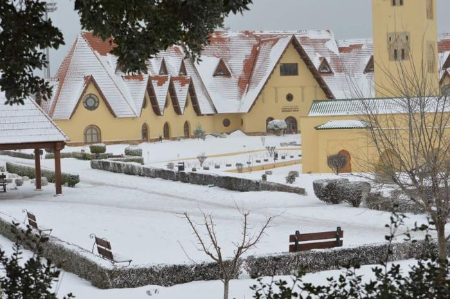

Ifrane : Sous les cèdres de la "Petite Suisse"
Publié le 15 Janvier 2026 par Asmae
Un contraste saisissant : Quitter la chaleur de la plaine pour monter vers Ifrane, c'est changer de continent en quelques kilomètres. À 1600 mètres d'altitude, l'architecture marocaine laisse place à des toits pointus en tuiles rouges et des jardins fleuris. On oublie vite qu'on est en Afrique du Nord dès que les premiers flocons commencent à tomber sur les pins.
Le Lion de Pierre : On ne peut pas visiter Ifrane sans saluer son célèbre lion sculpté dans la roche. Mais pour moi, la vraie magie se trouve un peu plus loin, dans la forêt de cèdres de l'Azrou. Là-bas, le temps semble figé. Les cèdres millénaires imposent le respect, et si vous êtes discret, vous verrez les macaques de Barbarie observer curieusement les passants.
"Ifrane est le poumon vert du Maroc. C'est ici que l'on vient respirer l'air le plus pur du Royaume et se ressourcer au bord des sources d'eau vive."
Mon souvenir le plus marquant : Une randonnée au petit matin vers le lac (Dayet) Aoua. Le brouillard flottait encore sur l'eau, et les chevaux paissaient librement dans les prairies givrées. C'est un Maroc calme, silencieux et incroyablement serein.
🏔️ Infos de l'Atlas
- Météo : Prévoyez de gros manteaux ! Même en été, les soirées peuvent être fraîches dans le Moyen Atlas.
- Activités : Visiter l'Université Al Akhawayn, magnifique campus qui rappelle les universités américaines.
- Gastronomie : Goûtez aux pommes de la région et au miel de cèdre, un délice boisé et unique.
← Retour aux récits